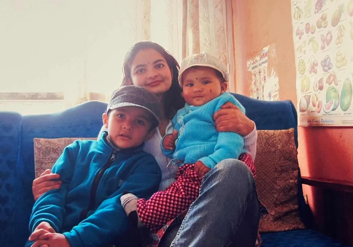

for: whoever found the link

🐾
tap to open faster
 TIWARI
TIWARI
my corner of the internet. chappal off at the door, mind the cat hair ↓
hello hello
Namaste. I'm Martin. I build things on the internet, break them, negotiate with them at 2am, and act like nothing happened by morning.
This is not a CV. No grades, no "passionate self-starter" nonsense. Just me, the corners of the internet I actually live in, and three secrets hidden where you least expect them.
(three. counted by hand, like everything else here.)
evidence that I exist


the family unit
first, the cat. HARU is a calm, polite, extremely well-behaved young lady.



yes, mom's in the graduation one up there. blinking. she counts double.
cryptid update

correction filed
turns out bigfoot slipped up. dad, caught in the wild: crowning me with the topi, both of us buried in marigolds, whole of Kathmandu behind us.
the empire runs itself for exactly one afternoon a year. this was the afternoon.
evidence log: case closed. 👣
exhibits, unordered


find me on the internet
the classified file
real id. definitely legal. tug it.
rapid fire, no context
flick it, it keeps going. turn one over, there's more on the back →
the soundtrack
synced from my actual playlist. judging is allowed. changing it is not.
leave your mark
got something to say to me? say it here. no name, no login, no consequences. it lands in my secret spreadsheet, anonymously.
ok, that's me
that's "what's up" for the non-nepali crowd. this is not a CV, so here's what's actually happening right now, no "allegedly" about it:
signal ends here. HARU has muted further notifications.
p.s. you just scrolled through a stranger's entire life and stayed till the end. that's rare. respect.
whatever you're carrying today, set it down for a minute. drink some water. text the person you just thought of. saachi, they thought of you first. they're just slower at this.
and if nobody has said it yet today: the internet is better with you in it. glad you exist.
, martin (HARU agrees, off the record)
sealed. scroll back up if you want it open again — it's your letter now.